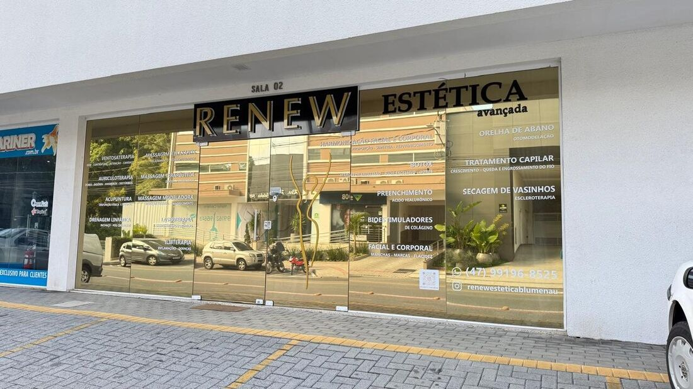
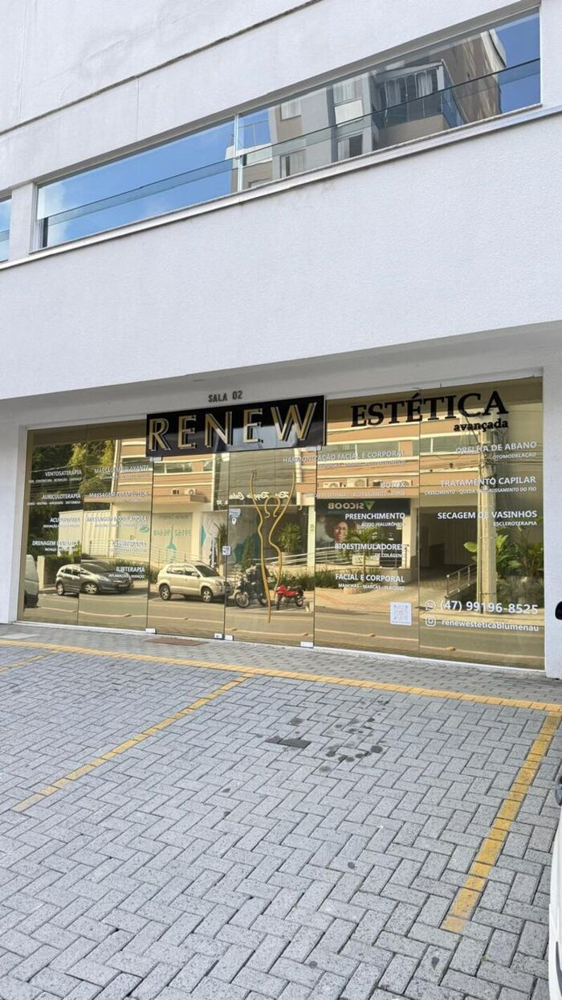
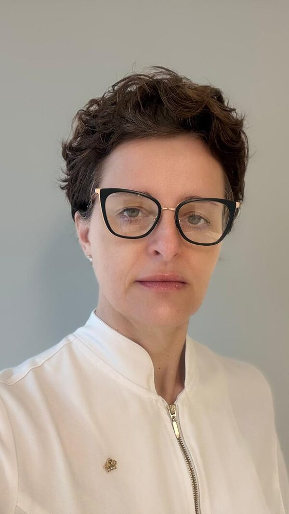
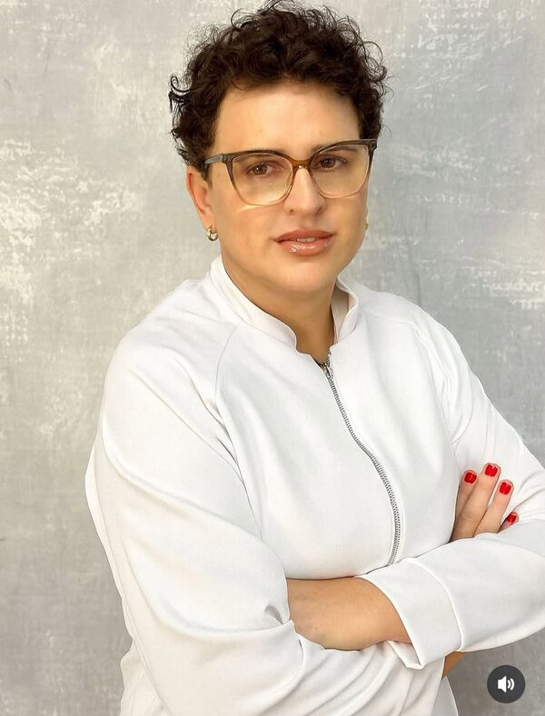
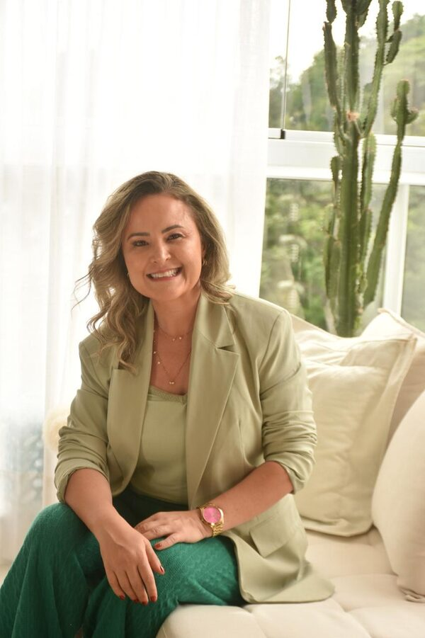

O segredo não é exagerar.
É respeitar a sua
essência
.
Uma clínica multidisciplinar onde estética, saúde e acolhimento se encontram. Tratamentos seguros, naturais e sem afastá-la da sua rotina.
Muito além da estética. Uma jornada de reencontro com você mesma.
Na Renew, você não é mais um número numa agenda cheia. Somos uma clínica multidisciplinar onde terapia, estética e saúde caminham juntas — com escuta, tempo e protocolos pensados para a sua história.
Aqui o cuidado é individual: nada de linha de produção, nada de resultado padronizado. Cada plano nasce de uma avaliação presencial e respeita a sua essência.


Terapias Clínicas & Bem-estar
Gleice Felipe
Terapeuta Integrativa · Massoterapeuta
Um espaço para o corpo desacelerar e reencontrar o equilíbrio. A Gleice cuida de dores, tensões e estresse com terapias integrativas — e trata medidas e bem-estar com massoterapia. Cuidado de quem entende o corpo como um todo.

Estética Facial & Modulação
Dra. Eliane Brining
Biomédica Esteta · CRBM/SC 11688
Naturalidade acima de tudo. A Dra. Eliane valoriza a sua beleza individual — sem exageros, sem rostos iguais. Procedimentos seguros e minimamente invasivos para você se reconhecer no espelho.

Saúde Integrativa & Emagrecimento
Dra. Tatiana Toledo
Médica Nutróloga · CRM SC 25019
Saúde de dentro pra fora. A Dra. Tatiana cuida do emagrecimento com diagnóstico médico e acompanhamento real — para encerrar o efeito sanfona e devolver energia, com um plano feito sob medida pra você.
★ 5,0 no Google · 55+ avaliações
“Me senti acolhida do início ao fim. O resultado ficou natural, exatamente como eu queria.”
“Atendimento humano e profissional. Explicaram cada etapa com calma e segurança.”
“Finalmente um lugar que cuida da saúde junto com a estética. Recomendo de olhos fechados.”
Resultados reais
imagem real
imagem real
imagem real
imagem real
Perguntas que toda paciente faz
Conforto é prioridade: usamos anestésicos tópicos, técnicas modernas não incisionais e refrigeração cutânea. A maioria das pacientes relata um procedimento tranquilo.
Raramente. São processos ambulatoriais, com retorno quase imediato às atividades e sem imobilização prolongada.
Não padronizamos: cada protocolo nasce de uma avaliação individual e presencial. O valor reflete o plano feito sob medida pra você.
Sim. Profissionais registradas em seus conselhos de classe, protocolos rígidos de biossegurança e antissepsia e materiais de qualidade.
Venha tomar um café e conversar sobre o seu bem-estar.
Estamos no bairro Velha, em Blumenau. Um ambiente acolhedor, pensado para você se sentir em casa desde a recepção.
R. Mal. Deodoro, 544 — Sala 02
Velha, Blumenau - SC, 89036-301